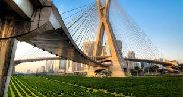

"A produção de alimentos de boa qualidade, a custos relativamente baixos, pode contribuir para a melhora da qualidade de vida da população, diz Mayra Barata"
Quando se pensa em agricultura urbana, as pequenas hortas vêm à mente, porém, não são somente elas que se enquadram nesse conceito. “Ela pode ser entendida como a atividade agrícola ou de criação de animais realizada no interior ou nos arredores das cidades ou metrópoles e destinada ao consumo próprio ou à venda em mercados locais“, explica a pesquisadora Mayra Barata, do Núcleo de Pesquisas Epidemiológicas em Nutrição e da Cátedra Josué de Castro da Faculdade de Saúde Pública da USP. Mayra Barata – Foto: LinkedIn Para definir a classificação, ou seja, quais cultivos e criações se enquadram em qual área da agricultura urbana e periurbana, é preciso pensar além do espaço físico e considerar também outros fatores: “Pesquisadores da área costumam criar classificações de acordo com sua localização, escala, mão de obra empregada, função do plantio, entre outras características. Dessa forma, podemos diferenciar duas hortas de acordo com sua finalidade, por exemplo, existem hortas para fins de ensino e aprendizagem, e outras voltadas para a produção comercial“, comenta Mayra. As hortas urbanas também podem ser inauguradas e mantidas tanto pelo governo, como no caso do programa Hortas Cariocas da Secretaria de Meio Ambiente da Cidade (Rio de Janeiro), em parcerias público-privadas, como o caso do projeto Hortas em Rede do Sampa+Rural (São Paulo), em conjunto com a Enel Distribuição São Paulo, quanto pela população, que são as hortas comunitárias. Importância O grande ponto em comum entre todas as classificações da agricultura urbana e periurbana é a proximidade com os mercados consumidores e a influência forte das lógicas da cidade. Mas a sua importância vai muito além, como coloca a pesquisadora: “A produção de alimentos de boa qualidade nutricional e sem agrotóxicos, desenvolvida a custos relativamente baixos, pode contribuir não só para melhorar a qualidade de vida da população, pensando tanto nos produtores quanto nos consumidores, como também para aumentar a renda familiar dos produtores de alimentos“. Na questão da saúde da população, Mayra acrescenta: “Nos últimos anos, temos acompanhado um aumento da prevalência do sobrepeso/obesidade, das doenças crônicas não-transmissíveis e um crescimento nos índices de insegurança alimentar e nutricional. As modificações dos sistemas alimentares e o enfraquecimento de políticas públicas de segurança alimentar e nutricional podem ser algumas das causas. Como consequência, há o aumento do consumo de alimentos ultraprocessados e a redução do consumo de alimentos in natura e minimamente processados”.
